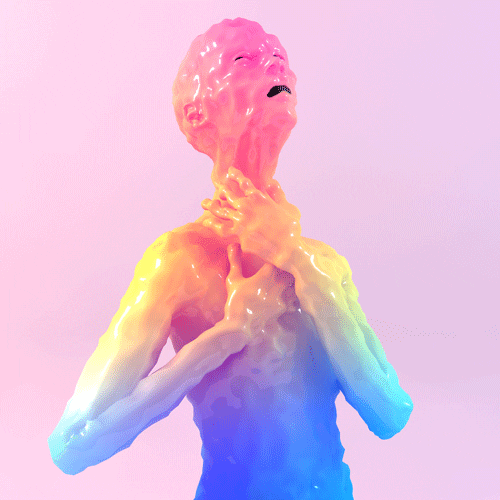
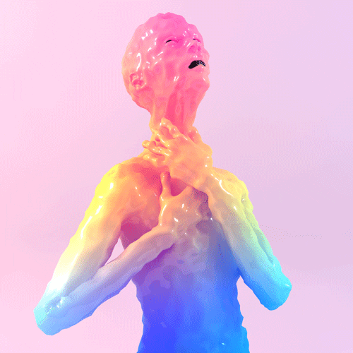
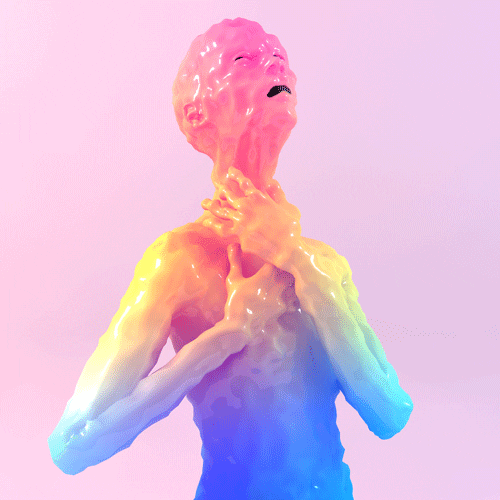
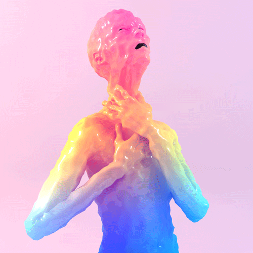

You two sit by the pink lake together.
Brenil explains, "For you to get home, you need to retrieve the orb from the cave past the light in the forest."
"How do I get there?"
Brenil hesitates, but you see in their eyes they have no choice but to tell you.
"Our people are not allowed to cross that archway to where you humans live. We are stuck in this liminal land with no way to leave.
My father was human, and my mother was born in our tribe. I am cursed with blood that attracts the beasts.
If I try to even go near the forest's light, I fall into a deep disease and the beasts will swarm the land around me.
I've tried before many years ago.
Only humans or those with human blood can see the light, so the others won't know how to help you."
There is silence between you.